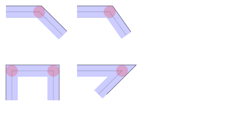
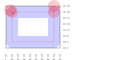
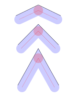

PyCut Tutorial
Introduction
Welcome to PyCut, a clone of jsCut, the excellent (at least for beginners) CAM, web-based programm, that takes as input SVG files and generates G-Code. So why this rewrite ?
PyCut aims to offer all the (minimalistics) features found in jsCut, with some improvements. Hopefully you will find PyCut usefull when learning CNC and producing your first GCode files.
Starting point of PyCut are SVG files, your designs. Indeed, with PyCut, you do not need to do 3D modelling. For simple milling tasks SVG files (2D) are perfectly OK. Granted, while it is easy to define circles, rectangles etc. in SVG, SVG paths definitions (for complex shapes) are unfortunately not so straightforward as one could think, and free software lacks good SVG paths modelling applications. Infact, writing a SVG file with a text editor is sometimes the best way to go. To generate complex svg paths, other tools may be used, and the results may be copy/pasted into the hand-written files. PyCut recommands the online tool SvgPathEditor for this purpose, see Appendix.
In the following, we point out what has to be taken into consideration when creating "usable" SVG files for PyCut.
SVG Documents
PyCut can only process svg documents without transformations. Should you have a document with transformation, try the utility svgresolver.py (see later).
SVG ViewBox
PyCut, in order to work accurately, needs the SVG document to define its standard width and height attributes with the units "mm" or "in".
Note: The specified units are not necessarely the ones specified in the generated GCode(s). There is is another setting to set the GCode units elsewhere in PyCut. Admittingly they should correspond for the sake of good documentation.
<svg version="1.1" width="<width>mm" height="<height>mm" ...
...
</svg>and the viewbox definition shall be of the form
viewBox="0 0 <width> <height>"with the viewbox width and height corresponding to the SVG attributes width and height. Notice that PyCut strongly recommends a viewbox origin to be (0, 0), although this is not mandatory.
Note: viewbox x and y attributes (origin) are allowed to be non zero! (but then take care of the produced GCode coordinates). When stucking to the (0,0) origin, all designs have positive X and Y coordinates (in the svg coordinates system), and thus all produced GCode -when reference is top left of material- have positive X coordinates and negative Y coordinates (standard orientation). Easy to remember!
As an example:
<?xml version="1.0" encoding="UTF-8" standalone="no"?>
<svg version="1.1" width="200mm" height="100mm" viewBox="0 0 200 100" id="test"
xmlns="http://www.w3.org/2000/svg"
xmlns:svg="http://www.w3.org/2000/svg">
<g id="root">
<circle id="circle" cx="30" cy="60" r="20" stroke="black" stroke-width="1" fill="red" />
<rect id="rect" x="60" y="40" width="30" height="40" stroke="black" stroke-width="1" fill="green" />
</g>
</svg>SVG Shapes and Paths
The SVG standard is very large, and PyCut cannot simply read a svg file, display it, and allow the user to define cnc operations on the "shapes" defined inside the svg file. Of course, the goal of PyCut is to process as many svg data as possible.
The shapes inside a svg file are the following:
<rect><circle><ellipse><polygon><line><polyline>
The powerfull
<path>
can define in a single path definition many closed or opened (sub)paths.
Warning: Some shapes can completely overlap smaller shapes, depending on the order they are defined in the SVG, and thus making the smaller shapes invisible in the viewer. In this case, larger shapes should be defined before the smaller ones, so that the smaller ones are on top of the larger ones.
PyCut processes "paths" in order to calculate geometries and cnc tool paths, but thankfully it can read out of the box all kind of shapes, so there is no need to convert your svg files into "paths only" svgs.
Finally, the user will maybe also want to process the strings written in the svg file:
<text>
Warning: Strings are not (yet) imported directly. They have first to be converted to paths.
In the following, we will employ the term "shapes" for svg shapes as well as for svg paths.
In order to reference the shapes, the shapes must have their own "id", hopefully unique inside the svg document. The user, having edited the svg file "per hand" or not, should not forget to check and give the shapes he wishes to process unique ids.
Note: PyCut will only display shapes in its viewer which have an id.
Note: These ids play the role of the shapes name, so a good practice is to give them meaningfull values (names).
Opened and closed paths
A path can be closed or not. This is not a matter if the path's first point is equal to its last point. A closed path or subpath contains the annotation "Z" or "z" at its end. Even if the first point of the path is equal to its last point, the path is only considered as closed with the ending "Z" or "z".
Warning: PyCut strongly relies on the [Zz] annotation to decide if the path is closed or not. When not closed, "Pocket" operations will not be allowed for this opened path.
PyCut imports closed paths as shapely "MultiPolygon", while opened paths are imported as "MultiLineString", but here the sake of simplicity, we will only refer them as "Polygon" or "LineString".
PyCut will import the other shapes either as "Polygon" (i.e.
closed items) or as "LineString" (i.e. opened
items). Of course, svg <rect>, <circle>,
<ellipse> and <polygon> are closed items, while
<line> and <polyline> are opened items. When
importing a <path>, things are more complicated, as a path can be composed of
many subpaths (starting with [Mm]) and every subpath can be closed or not (ending with
[Zz]). PyCut will try to import these paths definitions right, and in case of closed
paths will also try to import them as shapely polygons "with holes" even if this concept does not
exist in SVG. Moreover PyCut will try to import a svg path as a valid (shapely) MultiPolygon in the shapely sense, or as a list of valid MultiPolygons if one single
valid MultiPolygon is not possible. For example, the letters "i" or "j" are defined with a single svg path, defining
two separates polygons, and it makes sense to consider these paths as a single shapely MultiPolygon entity. The letter
"a" is a polygon with one hole, the letter "g" is a polygon with two holes (for some fonts). In the freetype
vocabulary, "a" is formed by 2 "contours", "g" by three "contours".
Text shapes
PyCut cannot process yet <text> items directly. Fortunately,
<text> items can be converted into<path> items,
sonce they will be ignored by PyCut. PyCut also comes with the utiilty
svgtext2svgpath.py which will also convert your <text> items. How
to use it? just call the svgtext2svgpath.py program which outputs in a new svg the <text> items as <path> items. Copy/paste the result of
a <text> conversion into your own svg. A successfull conversion will only occurs if
the <text> item is simple enough: the text "value" should not be splitted into
several <tspan> items with different fonts. No <tspan> tag at all is also possible (and simpler). IN
PROGRESS.
This utility is found in the source code inside the folder "utilities/svgtext2svgpath."
All in all, if PyCut were to display text strings at the wrong positions (after having transformed them into paths), the user can always export the svg from Inkscape (and write PyCut a ticket).
Special tags: defs and use
PyCut cannot import directly the very handy SVG <defs> and
<use> feature. The utility svgresolver.py delivered with PyCut
will have to be used. The utility svgresolver.py takes as input the SVG file containing
<defs> and <use> tags and outputs a new SVG where all
<defs>/<use> have been resolved, i.e. turned into real objects.
This utility is found in the source code inside the folder "utilities/svgresolver."
One drawback is that the user has then to manage 2 SVG files: the first one with <defs> and <use>, and a second one, the "resolved" one which is the input file for PyCut.
Transformations
Info:Transformations can be defined on every shapes or groups, and are often used in combinaison with the <defs> and <use> tags.
PyCut cannot handle "out of the box" svg datas where shapes are defined with "transform" operations (translate, rotate etc.).
Nevertheless, it is also possible to "resolve" the shapes transformations with the previously mentioned utility
svgresolver.py. This utility also processes all transformations found in the svg file, while keeping
the"id"s right. It works best in combinaison of the <use> tag, as a single item defined in the <defs> section can then be re-used at many locations. Obviously, not
everything is possible: for example, transforming a <rect>
element with a rotate transformation does not result in a <rect>
(but a <polygon>) and svgresolver.py cannot
handle this.
IN PROGRESS: this utility should be integrated into PyCut so that the user can spare this step.
Basic example
Opening the PyCut application
type in the console:
> python pycut.py -h
> python pycut.py --proj=<projectfile>
> python pycut.py --gcode=<gcodefile>
Without argument, pycut opens without loading any SVG file. With the --proj argument, a previously
saved project is opened.
PyCut as GCode simulator
PyCut can also be used as a GCode viewer or simulator. GCode files can be loaded with the argument
> python pycut.py --gcode=<gcodefile>
Hopefully PyCut can parse it (roughly: what Candle can parse - PyCut uses a similar parser). The toolpaths can then be viewed in the GCode viewer (toolpaths simulation) and GCode simulator (material removing simulation). For the GCode simulator, the tool diameter is needed for an accurate simulation. PyCut saves its generated gcode files with a comment line of the form
; Diameter <value>that is parsed to retrieve the right tool diameter. Inserting such a line in the external GCode allows PyCut to properly simulate the GCode.
Loading a SVG file
So for the very first time, start PyCut without specifying any project.
Import your svg into PyCut. It is achieved through the menubar command SVG | Load SVG. The SVG content should be displayed in the central area.
Creating a PyCut Project
Then create a new "project" : this is a file that stores uponside the svg file all the CAM operations that the user has created or will create, together with all others settings relevant when generating GCode. It can be created, saved and loaded again and modified - quite practical.
Creating CAM operations
Once an empty project is created and a svg file loaded, it is time to create some CAM operations: select 1 or more items in SVG window (they should turn beige) and click the button "Create Operation": a new operation in the operation table should appear.
Define the properties of the operation: the main one is the CAM operation type:
- Engrave
- Inside
- Outside
There are also the
- Drill
- Peck
operations, for the <circle> shapes whose diameter is smaller or equal to the tool diameter, and the
- Helix
operation for <circle> of any size.
The others options will be discussed later. Default values at this point should be Ok.
Generate the GCode
Select (enable) one or more CAM operations in the operations table: the "geometry" of the operation(s) should turn black in the SVG viewer: this is (are) the region(s) of the material that wil be affected when cutting the material.
Then finish creating the G-Code by pressing the button "Generate GCode" above the operation table: the tool path(s) should appear(s) in green in the black regions.
The produced G-Code can be inspected in the "G Code viewer" and the "G Code Simulator" display areas.
You just have to save the G-Code and you're done. The G-Code file should be named as the CAM operation name, or, in case of multiple operations enabled, as the project name, with ending suffix "nc".
GUI Components
Svg Settings
Title
This will display the SVG title if set
Width
Height
Tool
Tabs
It's easy to define tabs with PyCut: just click the button "Create Tab" and a red circle is created in the svg viewer, of radius 5 and position (10,10). The user can drag 'n drop it from the svg viewer, or set its size/postion in the tab table. Yes tabs, for simplicity, are circle. To be effective, the tabs have to be enabled and of course placed somewhere on the generated toolpaths. The height of the tabs is shared by all tabs. They are ignored for Pocket operations.
You can check the Gcode generation in the viewer/simulator if everythings is Ok.
Material
The Operations "Cut Depth" should not be larger than the material thickness.
Warning: The clearance is written in the produced g-code. Thus the user should be sure it does not exceed the physical possibilities of the machine when travelling in the z-axis, especially for small machines like the 1419 or 1310.
Warning: The thickness as none impact on the produced GCode. It is only there to remaind that every CAM operation should not exceed this value (no check performed). The depth cut of any operation should not exceed the material real thickness, or only exceeding it with a minimal value, only to be sure to cut through, and knowing there is a spoilboard that has an acceptable thickness.
Curve to Line Conversion
If your design contain curves (svg "arcs" or "bezier" curves), they have to be discretized in small segments.
The 2 following parameters allow to specified how fine the curve discretization will be:
- Minimun number of segments
- Minimum Segments length
GCode Conversion
The starting location of a milling operation is given by the initial location in the GCode. Per default, PyCut gives as starting point the (0,0) coordinates of the SVG file, which is located at the top-left of the material. The SVG conventions are opposite to GCode convention considering the Y direction.
So the GCode generation will have to invert the direction of the Y axis coordinates. But still the reference is the top-left postion.
It is possible to change the reference location of the generated GCode
- Zero top left of the material
- Zero lower left (bottom) of the material
- Zero lower left (Op) i.e bottom left of the area defined by the Gcode
- Zero Center (Op) i.e center of the area defined by the Gcode
Note that these 4 buttons act as radio buttons.
Note: In case of lower left (bottom) of the material, the Y size of the material is extracted form the svg file: the svg "height" attribute.
These four basic options set the X-Offset and Y-Offset of the GCode calculation. After a GCode generation, it is still possible to modify the X-Offset and Y-Offset to fit at best how to user wants to have the origin be located with the help of the 2 spin boxes. Infact, modifying "per hand" the X or Y offsets recalculate the GCode, so this is a costly operation.
The checkbox "Use Offset" is used, as example, as the following: first, the checkbox is unset. The user selects only one CAM operation, with for example the option Zero Center (Op). The X and Y offsets are thus automatically evaluated. Then the user checks "on" the "Use Offset" checkbox, so that these offsets are frozen and become the references for the further CAM operations and their produced gcodes.
Info: The two SpinBox entries are "debounced" when entering the values from the keyboard, as each change of value calls the GCode generator, which is a costly operation. So only by typing "Enter", the GCode generator is then called. Utilizing the spin boxes arrows is not debounced, so at every step the GCode is recalculated.
Lets give an example: in a SVG file, two circles are defined, one has to be pocketed with a depth of 10mm, the other with 5 mm. So two operations are needed. Imagine the center of the first circle is at (10,15) and the center of the second circle is at (20,25). If boths operations are relative from the "Zero top-Left material" reference, no problem. You have to position your bit exactly at the "top-left" of your material in order to mill the first hole at exactly (10,15) from this initial position.
But imagine you want the reference to be the center of the first circle. After having generated the GCode for the first circle, click on "Zero Center (Op)" and observe and carefully note what are the resulting X an Y offsets (it will be (-10, 15)). Now select the second operation and generate the GCode. The offsets will certainly chande, but then type in the offsets the memorized X and Y offsets. The GCode will be reevaluated with the offsets (-10,15) and thus the GCode 0,0 position will be the center of the first circle.
But why would you want to have as reference of the GCode the center of the first circle ? Well when milling the two holes in your workpiece maybe you may want to position the bit at a given position on the workpiece and from this location mill the second holes, the first hole beeing milled exactly when you have positioned your bit. Because what was important was the relative position of the two holes, while the absolute position of the first hole was to be determinated by yourself on the workpiece.
An other use case is when 2 oparations have to be performed with a different tool diameter.
Info: The option "Zero Center (Op)" is particularely usefull when the user wants to run 2 differents G-Code files produced from 2 different CAM operations. A use case is when these 2 CAM operations have 2 different tool diameters. By ensuring that the center of the operations are the same, at the end of the first operation (first GCode file), the user can change the tool in the machine and load/start the second G-Code file. This occurs when some holes have to be drilled in the first operation and a contour or pocket operation has to be performed in the second operation with a much larger tool. Of course the two operations must have the same center. If not the case, the XOffset and YOffset can be set to ensure that the centers are coincidents.
And further:
- Flip X/Y
In the generated G Code, X and Y are switched.This can be helpfull, for example in the case your CNC is the "1419" model (mine!) which is not as large as deep. So this option allows to carve something like 16x10 cm without rotating all items in the source svg.
GCode Generation
Some useful options can be set up:
- Return at initial location at end of the Job
- Spindle Start/Stop (M3/M5 codes)
- M2 code
Note that the generated GCode is meant to be used for a GRBL control board, so only "lines" are generated, no "arcs" or other fancy GCode directives.
Create Operations
This is where the user defined its cam operations, thus this is where the action takes place.
First one or more item(s) have to be selected in the svgviewer, click on "Create Operation" and a default operation is created. When more than one item has been selected, the user can perform logical operations on this set of item
- diff
- intersect
- union
- xor
When "enabling" this op, the resulting geometry will be displayed ion the svgviewer
Note: The geometry is highlighted in red. The highlight color can be setup in the settings dialog, or from the menu bar (these 3 strange colored buttons). It is useful to choose a color different from the color of your shapes.
Then the cam operation can be chosen
- pocket - only for closed shapes
- inside
- outside
- engrave
- drill - ONLY for circle shapes
- peck - ONLY for circle shapes
- helix - ONLY for circle/ellipse/rectangle/polygon/closed path shapes
For opened paths, the pocket/drill/peck operations are not available.
NEW: for circles, "drill" and "peck" operations are available. Infact, for a pocket operation with a circle of diameter smaller than the cutter diameter, no tool path would be generated.In case of the circle diameter is smaller or equal than the cutter diameter, in order to have toolpath, "drill" or "peck" is the way to go.
NEW: for circles/ellipses/rectangles/polygons and more generatly closed paths, the "helix" operation is available. This cut "smoothly" in the center of the shape an hole or a donut, depending on the radius of the helix and the cutter diameter. The helix has always the tickness of the cutter diameter.
In order to generate G code, enable one or many operations and click on "Generate G code". PyCut will try to do its best... The resulting G code is displayed in the G code viewer and G code simulator.
Finally, clicking on "Save G code" will produce a valid G code file. Candle can be used to send the G code to your machine. Have fun...
CAM Operations
Inside
Outside
While the name speaks for itself, be aware that it is possible to make a cut from a virtual "stock" by setting the "width" of the operation. This does not however allow to cut any kind of stock as the "width" is constant all over the coutour we wish to cut from the ouside. Nevertheless, knowing the exact dimensions of the material you are cutting, it is possible to define fake shapes in order to cut them as a virtual stocks.
Engrave
This cuts exactly on the shapes borders. Be aware that the cutter has a diameter!.
Helix
The helix's center will be the center of the (closed) shape. For a circle, this is obviously the
center of the circle shape. Considering the case where the center of the helix is [0,0], on which "orbit" will
move the cutter? Well in case of an Helix operation, the "width" operation corresponds to the
helix outer radius. This means that the radius of the orbit, the circle on which the cutter center
travels, is width - cutter_radius. So the width has to be larger than the cutter radius, sonce the helix
will be infact a drill operation. A value larger than the cutter diameter generates a ring (with an inner hole), and
the helix is then simular to an "Inside" or "Outside"operation for an imaginary circle shape, however with a "smoother"
cut.
The helix pitch (revolution depth) is the most important parameter. Theoretically, the Helix operation could perform threads cutting by generating first an hole, then an helix "inside the hole" where the outer radius of the helix would be smaller than the hole radius, and utilizing a dedicated cutter.
Pockets
The standard pocket algorithm is the so-called "contour" algorithm. Starting from the outside border, offset curves are generated one after the other until the whole pocket "space" is processed. At the end, ordering of the offsets is reversed, thus starting from the middle of the pocket.
There are others algorithms, for example the "spirale" algorithm. Here we start fom the center of the pocket and go towards the outside in spirales, hence the name. It is easy to calculate the toolpaths for circles and ellipses. For the other shapes, PyCut utilizes the external (free) library HSM_nibblers which produces very nice toolpaths.
PyCut will try to implement this pocket algorithm in two steps: first an "Helix" operation, then a "Pocket" operation.
Trick: to "activate" the spirale algorithm, just name the pocket operation with a "sp_" prefix!
Trick: to "activate" the HSM_nibbler algorithm, just name the pocket operation with a "hsm_" prefix!
Note: To enable the Spirale pocket toolpaths, prefix the pocket operation with "sp_"
Note: To enable the HSM pocket toolpaths, prefix the pocket operation with "hsm_"
The helix will be cut in the "center" of the shape (the shapely polygon "centroid)", and we pass this location to the HSM nibbler, thus ensuring a good start of the pocket "hsm_nibbler" operation.
The spirales will be for circles, ellipses shapes only -something admittingly rather restrictive- because these cases are more or less trivial. There is then no "isles" that neccessarely occur in the corners of the pocket for non-trivial geometries. But the HSM_nibblers toopaths are there for the others shapes.
Note: Having succesfully created an helix (hole) into the center of a basic shape (circle, ellipse, rectangle, polygon or closed path), then the "standard" pocket algorithm can be used with a very large overlap (value close to 1) and a larger pass depth (rather than a standard overlap and a tiny pass depth that is used for standard pockets)
Pocket/Spirale
With a Pocket/Spirale operation, the cutter will plunge automatically with a depth equal to the specified standard pass depth. Hopefully a hole has previously been cut at this place... At best, an Helix operation precedes a Spirale operation. The spirale will mainly cut into the material "sideways". It seems it is a better way to mill pockets, as the bit is then used mainly from the side, preserving its drilling bottom side if the pass depth is equal to the full cut depth.
For a Pocket/Spirale operation to work best, as the pass depth is large, a very big overlap is required (example: 0.975). This way, the spirale only "attacks" the material on a rather limited side surface, thus preserving the bit and allowing greather depth passes. If you wish for example that at each spirale arm 1mm is milled, then the overlap has to be chosen accordingly. Denoting A the size of the material beeing cut at each spirale arm : A = cutter_radius * (1-overlap) => overlap = 1 - A / cutter_radius.
So a combined "Helix+Pocket/Spirale" operation is somehow similar to the normal "pocket" operation when a very large pass depth and an overlap near to 1.0 are chosen. Nevertheless, with the "contour" algorithm , the cutter would plunge into the material without helix (even if a ramp is still possible) for a large pass depth at the given plunge rate, which would be quite dangerous even if the plunge rate would be small.
Note that for an Helix or Pocket/Spirale operation, cam paths are calculated "per hand" without the help of the shapely library and its "offset curve" functionality. But the Spirale can only be used when considering circle/ellipse or rectangle shapes.
The ellipse and rectangle cases are derived from the circle case by mapping the coordinated of the path points from a circle to an ellipse/rectangle. The middle of these shaped has to be evaluated first, and the mapping between circle and ellipses/rectangles as well.
GCode DressUp (TODO)
DogBones
Warning: I am a CAM beginner, so for sure my solution is for sure sub-optimal.
When milling a pocket or a contour, the cutter is not able to mill into convex angles perfectly (yes the cutter is round).
Note that the amount of material not removed by the cutter depends on the angle of the corner and the radius of the cutter.
Note: For concave angles, the generated toolpaths around such corners are smooth and do not need any fixups.
Fixing the GCode "per hand" is absolutely no solution, so an automatic handling has to be perfomed.
Warning: Having had a look at (the doc of) some other tools (BlenderCam, Fusion360), I have noticed that these tools, in order to perform dogbones correction, "actualize" the geometry, or rather said the geometry contour so that this contour get bones. After that, the "inside" or "pocket" operations are performed "as usual". I will try to take a different approach : only the generated GCode will be "fixed" when encountering "angles".
Warning: A drawback of this approach is that the user has 0 influence on the dogbones generation. On the other, he does not have to specify them at all
A first try
Let's get a taste how dogbone handling look like. Here we suppose the cutter radius is 3mm. We wish to mill an inner square hole, so the "convex angle" corner problem occurs. We have 2 (or more!) strategies to allow a square to fit in the milled hole. Strategy "1" is shown on the left, strategy "2" on the right: the extra tool path is displayed with the cutter at the end of the extra tool path (as well as the standard cutter position at the toolpath corner).
We see that the strategy "1" removes far less extra material than the strategy "2", so we will concentrate only on the strategy "1".
At every G01 instruction, there is certainly a direction change, which can be tiny (consider milling an inner circle, not as G02 or G03 but with a list of GO1 instructions) or big, here in our case a 90 degrees direction change.
G1 X10.00 Y5.00
G1 X10.00 Y20.00 (go up to A)
G1 X31.00 Y20.00 (change of direction to the right)We shall insert a GCode block before changing the direction
G1 X10.00 Y5.00
G1 X10.00 Y20.00 (go up)
; fix up begin ------------------------
G1 X09.00 Y21.00 (goes 1mm top left)
G1 X10.00 Y20.00 (and back)
; fix up end --------------------------
G1 X15.00 Y20.00 (change of direction to the right)or, using incremental distance mode for the fix-up:
G1 X10.00 Y5.00
G1 X10.00 Y20.00 (go up)
; fix up begin ------------------------
G91 (incremental distance mode)
X-1.00 Y1.00 (goes 1mm top left)
X1.00 Y-1.00 (and back)
G90 (absolute distance mode)
; fix up end --------------------------
G1 X15.00 Y20.00 (change of direction to the right)In the following, I will prefer switching to incremental distance mode (G91) and back (G90) for the fixups.
In this first try, we "naively" gave at the left corner an extra travel of 1 mm in the NE direction. We can certainly do better.
Example-1: exact fixup, same geometry with a cutter of radius 3.0 mm
We wish to calculate the cutter extra travel exactly in order to minimize the extra stock removal while achieving the corner beeing milled completely as shown on the picture.The right corner on the left is at coordinate [7.0, 23.0] and the cutter reaches the coordinate [10.0, 20.0] position for it (see GCode). Thus there is a gap of
gap = sqrt(3.0*3.0 + 3.0*3.0) - 3.0 = 1.2426
between the corner C and the border of the cutter at point A.
So we know which extra travel dx and dy the cutter must travel in order to its border
reaches C:
dx = gap * cos(3 *pi / 4) = -0.8786
dy = gap * sin(3 *pi / 4) = +0.8786The angle 3*pi/4 here is the direction of the outer corner (concave) angle bisection line, let's call
it the "orientation" of the corner. It is of course identical to the direction of AC, but in practice C is not known,
only the position of the cutter. not that the cutter "trajectory" makes exactly the same angle as the real geometry
when encountering a convex angle. So lets try to generalize for any corner "orientation". We denote this orientation
"bisect".
dx = gap * cos(bisect) = -0.8786
dy = gap * sin(bisect) = +0.8786So the fixup is
; fix up begin ------------------------
G91
G1 X-0.8786 Y0.8786 ( goes 0.8786 mm top left )
G1 X0.8786 Y-0.8786 ( back )
G90
; fix up end --------------------------Example-2: exact fixup, same geometry but at the corner D on the right
The corner coordinate is [34.0, 23.0] and the cutter reaches the coordinate [31.0, 23.0] from the left. Remember, the cutter radius is 3mm. The gap between the corner and the cutter border remains the same, as the angle is still a right angle.
But the orientation of the corner is this time pi/4.
dx = offset * cos(bisect) = 0.8786
dy = offset * sin(bisect) = 0.8786So the fixup for this corner is
; fix up begin ------------------------
G91
G1 X0.8786 Y0.8786 ( goes 0.8786 mm top right )
G1 X-0.8786 Y-0.8786 ( and back )
G90
; fix up end --------------------------Easy!
Info: For this particular case (cutter radius 3mm, angle 90 deg.), the gap is 1.2426 mm
and the fixups (angles orientations pi/4 or 3pi/4) dx = 0.8786, dy = 0.8786 mm.
For different cutter radiuses, the ratio gap / cutter radius (1.2426 / 3.0 = 0.41) shall remain the same.
General case / automatic fixups
Knowing only the GCode, the theoretical corner on the stock could be calculated in order to evaluate the gap between the cutter border and the stock corner. Infact the stock corner does not have to be calculated at all, as the gap is infact only function of the cutter diameter and the angle of the corner of the toolpath. The orientation of the corner indeed does not play a role (for the gap size).
The \(gap\) (distance between corner and cutter border) is
\(gap = \displaystyle \frac{cutter_R}{sin(a)} - cutter_R = \frac{1 - sin(a)}{sin(a)} . cutter_R\)
where \(a\) is the half the size of the corner's angle. So for a cutter radius of 1:
- \(a = 60^{\circ} \implies gap = 0.15 \)
- \(a = 45^{\circ} \implies gap = 0.41 \)
- \(a = 30^{\circ} \implies gap = 1.00 \)
Considering the GCode pattern (constitued of 3 G1 lines)
G1 X<x1> Y<y1>
G1 X<xm> Y<ym>
G1 X<x2> Y<y2>we wish to generate a fixup for this GCode pattern, this means at the points \([x_m:y_m]\). As it turns out, we do not need to know if we are milling for an "Inside" or "Outside" operation, we do not need to check either if the angle is concave or convex! Consider the following example: a spade. We would like to mill "Inside" or "Outside"
For an "Inside" operation, around the sharp corner "A", the angle in is concave and the size of the angle "inside" is larger than 180°. The Gcode path of the "Inside" operation will be smooth around A, a fixup is thus not needed; the GCode near A will be a succession of small G1 increments without sharp transitions. At corner "B", the angle is convex and the size of the angle "inside" is smaller than 180° . A fixup will be needed as the GCode path will also present a sharp corner of the same magnitide as the stock corner itself.
For an "Outside" operation, at corner A, the angle is convex and the size of the angle "outside" is smaller than 180° and thus the GCode at "A" will need to have a fix-up, while the GCode at corner "B" (where the size of the angle "outside" is larger than 180°) will be smooth, consisting again of a succession of small G1 increments without sharp angles.
At the locations where the GCode path is not smooth the fixups have to be performed. We set as threshold an angle of 120 degrees, slightly larger than a right angle. Above this threshold (from 120° to 180°), no fixup is needed at all as the gap if about only one tenth of the cutter radius or less, or it is simply an "exterior travel". Between 0° and 120°, we have to calculate the right direction of the angle bissection, the "orientation" of the corner. The "orientation" must be "outside the corner" in order to mill "inside" the corner.
Let's do some maths! the slope of the GCode incoming segment is \( m_1 = (y_m - y_1) \ (x_m - x_1) \) and the slope of the GCode outcoming segment is \( m_2 = (y_2 - y_m) \ (x_2 - x_m) \)
incoming segment equation: \( y = m_1 x + k_1 \) or, in another form \( a_1 x + b_1 y + c_1 = 0\)
outcoming segment equation: \( y = m_2 x + k_2 \) or, in another form \( a_2 x + b_2 y + c_2 = 0\)
The angle at the toolpath mid point is calculated with
\(cos(\beta) = \displaystyle \frac{ u \cdot v}{ \| u \| \cdot \|v\| } \)
and the internal and external bisections line equations of the corner are given by the two equations
\( \displaystyle \frac{ a_1x + b_1y + c_1}{ \sqrt{a_1^2 + b_1^2} } = +/- \frac{ a_2x + b_2y + c_2}{ \sqrt{a_2^2 + b_2^2} } \implies A_i x + B_i y + C_i = 0 \)
so the angles of these two bisections lines is given with \( tan(\alpha_i) = - A_i / B_i\) with \( \alpha_i \) in \([-\pi/2:\pi/2]\)
The correct bisection is the one such that its slope is contained in the slopes of the two corner's segments, and the orientation must look "outside" the corner.
Let's try our formulas for a sharp angle. Let's say the cutter radius is 1mm. The GCode encountered is
G1 X-2 Y2
G1 X4 Y4
G1 X2 Y-2So obviously there is a sharp corner at \([4, 4] \). The corner angle is \( \beta = 53.13\)°.
The slopes of the incoming and outcoming segments are : \(m_1 = 1/3 \) and \( m_2 = 3 \) and the two bisections slopes are \( -1\) and \(1;\) so the correct bisection is the second one, and its correct orientation is +45°
Gap
\( gap = 0.414 \)
Extra Travel
\( dx = 0.874 \)
\( dy = 0.874 \)
Example 2
G1 X0.0 Y0.0
G1 X0.0 Y4.0
G1 X4.0 Y4.0So obviously there is a sharp (right) corner at \([0, 4] \). The corner angle is \( \beta = 90\)°.
The slopes of the incoming and outcoming segments are \(m_1 = -\inf \) and \( m_2 = 0 \) and the slopes of the bisections are \( -1\) and \(1\). The correct bisection is the first one (slope -1), and its correct orientation is +135° (not -45°) pointing "outside" the corner.
Gap
\( gap = 0.414 \)
Extra Travel
\( dx = -0.88 \)
\( dy = 0.88 \)
PyCut GCode Dressup GUI
How to integrate this handling into PyCut ? There is a setting option "GCode DogBones threshold" which is per default 120°. A completely separate utility "gcode_dressup.py" will be called upon GCode generation completion to transform the GCode for the operations requiring it.
In the operations table, we add a column "fixups" as a checkbox, which, for every operation, can be set on or off. Moreover, in the GCode Viewer/GCode simulator GCode browsers, lines corresponding to added fixups (comprised between the comment lines
; start fixupand
; end fixupwill have a blue background in order to clearly identify them.
PyCut Utilities
SvgRevolver
The SVG standard is huge and there are many ways to write a svg data. One
very useful feature is to define basic shapes info the defs
part, and re-use these items many times, applying different transformation
for a given element. This is performed with the use tag.
<?xml version='1.0' encoding='UTF-8'?>
<svg version="1.1" id="svg" width="100mm" height="200mm" viewBox="0 0 100 200"
xmlns:xlink="http://www.w3.org/1999/xlink"
xmlns="http://www.w3.org/2000/svg"
xmlns:svg="http://www.w3.org/2000/svg">
<defs id="defs">
<circle id="my_circle" cx="0" cy="0" r="2.25" style="opacity:1;fill:#880088;stroke:#00ffff;stroke-width:0.2;" />
<rect id="my_rect" x="0" y="0" width="10" height="20" style="opacity:1;fill:#880088;stroke:#00ffff;stroke-width:0.6;" />
</defs>
<g id="layer1">
<g id="layer_circle">
<use href="#my_circle" transform="translate(10,10)" id="circle_left" style="opacity:0.5;" />
<use href="#my_circle" x="10" y="15" id="circle_right" style="opacity:0.9;"/>
</g>
<g id="layer_rect">
<use href="#my_rect" x="30" y="10" id="rect_1" />
<use href="#my_rect" transform="translate(50,10)" id="rect_2" />
</g>
</g>
</svg>But at the end of the day, an application (like PyCut) prefers to (or can only) work with a svg data where all elements (shapes) are defined without transformations, because evaluatings such transformations is not an easy task (indeed...).
Fortunately, the package svgelements does the job...
This utility uses svgelements, "resolves" all transformations
and writes the result to a svg file as output (what svgelements
does not). It also manages to preserve the ids of the
resolved items as well as merging the styles of the referenced items with
the used items.
Note: Styles attributes defined in the use do not overwrite those defined in the defs (fill, stroke). But
does.
Usage
From the command line
> python svgresolver.py -h
> python svgresolver.py --drop-defs test_basic.svgA file named test_basic.resolved.svg is created
<?xml version='1.0' encoding='UTF-8'?>
<svg version="1.1" id="svg" width="100mm" height="200mm" viewBox="0 0 100 200"
xmlns="http://www.w3.org/2000/svg"
xmlns:xlink="http://www.w3.org/1999/xlink"
xmlns:svg="http://www.w3.org/2000/svg" >
<g id="layer1">
<g id="layer_circle">
<circle id="circle_left" cx="10.000" cy="10.000" r="2.250" style="opacity:0.5;fill:#880088;stroke:#00ffff;stroke-width:0.2;"/>
<circle id="circle_right" cx="10.000" cy="15.000" r="2.250" style="opacity:0.9;fill:#880088;stroke:#00ffff;stroke-width:0.2;"/>
</g>
<g id="layer_rect">
<rect id="rect_1" width="10.000" height="20.000" x="30.000" y="10.000" rx="0.000" ry="0.000" style="opacity:1;fill:#880088;stroke:#00ffff;stroke-width:0.6;"/>
<rect id="rect_2" width="10.000" height="20.000" x="50.000" y="10.000" rx="0.000" ry="0.000" style="opacity:1;fill:#880088;stroke:#00ffff;stroke-width:0.6;"/>
</g>
</g>
</svg>and PyCut can use this "resolved" svg data as valid input. Note how the ids of the
use elements are passed to the "resolved" items.
Also note how the opacity values in the styles are merged in the resolved items's styles.
ToDo
integrate the converter in PyCut.
Bugs
rotate
- circles : ok
- rectangle : NO ROTATION (transform into a polygon ?)
- polygon : ok
- line : ok
- polyline : ok
- ellipse : NO ROTATION (transform into a polygon ?)
- path : ok
scale
- rectangle: no transformation when the scale transformation is given with y coefficient negative (-1 for example) there the rectangle is flipped. FIXED
SvgText2Svgpath
The conversion of text (<text> elements) given in svg files to paths (<path>
elements) is a often a concern for applications manipulating text in svg files. There are in Internet plenty of
projects/discussions on the topic.
For every language it seems that many solutions are given. Unfortunately, as far as I could observe, there is plenty of crap (unfinished packages, or deprecated etc.). This is especially the case when searching for solutions for the python language (which is quite a shame)!
I finally found only 1 (!) python package that seems to make the conversion in a reasonable way:
- ziafont (version 0.2) (as 15.01.2022)
This package reads the true type font binary files (which is a whole task in its own) and thus has access to every
bit of the files. Paths can then be calculated and exported. A quick try shown me how good this package is. Diving into
the code shows how deep the author of the package knows true type stuff. I only found one drawback: the output is full
of "viewbox" fitting exactly the size of the output paths, and these viewboxes are often with negative values. This is
because this package is not meant to transform text elements into path elements, but to
directly generate path data from a given string. And because of this, it is not so straightforward to use
the path data output and to plug it into the user own svg file as one would wish.
An other method would be to use the python package "freetype-py". This package performs the task of reading the binary files, and it is possible to generate the paths from the structures/objects that freetype-py offers. These are infact ctypes wrappers, and as a good (excellent) wrapper, many functions of the freetype c library are accessible as methods of these objects. Hopefully all informations of the fonts are accessible! No! freetype-py performs only 'kern' kerning, not 'GPOS' kerning (as far as I understand). The GPOS table seems not to be accessible from freetype-py, so I use ziafont code to load this table. Thank you ziafont! So eventually I pick from ziafont the following files for my task: gpos.py and fontread.py.
This is the approach that I follow in my package, and because of this, my code is much smaller than the ziafont one. But I am quite sure that ziafont is much more robust/bug free as my svgtext2svgpaths package.
The svgtext2svgpaths package
The features of my package are directly dictated from the need to convert svg <text> to svg
<path> elements inside a svg file. How does the result of the conversion has to look like?
- It must be without any "transforms" attributes. (so use my utility svgresolver)
- the location of the text described by the path(s) must match exactly the same input
<text>which is given in svg by the "x" and "y" attributes. - the size of the letters described by the paths must be exactly the same as the one given in the
<text>data: the "font-size" expressed in units "px". - and of course, font family and others (font-style, font-weight and font-stretch) must be respected, as far as possible.
It cannot handle the following strings:
- strings splitted on many lines (ziafont can)
- strings with different styles for separate chars in the string
Fonts in svg
From the Inkscape App, a text is entered, for example BB CC AA BB. The font family / type can be chosen
as well as the font-size, given in "pt" in the Inkscpae App GUI. Saving this file, we can observe in
the svg file that the text size is given in "px" units.
Units conversion is as following:
- 1 px = 3/4 pt
- 1 inch = 25.4 mm
- Inkscape resolution: 96 px per inch
So when giving in Inkscape a font size of 30 pt: 30 pt are 40 px are (40/96) * 25.4 mm = 10.5833. This is the value found in the svg file, with units "px".
A <text> definition in svg from Inkscape looks like:
<text
xml:space="preserve"
style="font-style:normal;font-variant:normal;font-weight:normal;font-stretch:normal;font-size:10.5833px;line-height:1.25;font-family:Arial;-inkscape-font-specification:'Arial, Normal';font-variant-ligatures:normal;font-variant-caps:normal;font-variant-numeric:normal;font-variant-east-asian:normal;fill:#000000;fill-opacity:1;stroke:none;stroke-width:0.264583"
x="9.7133684"
y="41.712864"
id="text1314">
<tspan
sodipodi:role="line"
id="tspan1312"
style="font-style:normal;font-variant:normal;font-weight:normal;font-stretch:normal;font-size:10.5833px;font-family:Arial;-inkscape-font-specification:'Arial, Normal';font-variant-ligatures:normal;font-variant-caps:normal;font-variant-numeric:normal;font-variant-east-asian:normal;stroke-width:0.264583"
x="9.7133684"
y="41.712864">BB CC AA BB
<tspan>
</text>but one could simplify it per hand:
<text style="font-style:normal;font-weight:normal;font-stretch:normal;font-size:10.5833px;font-family:Arial;fill:#000000;fill-opacity:1;"
x="9.7133684"
y="41.712864"
id="text1314">BB CC AA BB</text>The color (fill) and opacity do not play a role when cutting, but it is nice to have these properties in the resulting paths. Infact, the path elements resulting from the conversion will be shown in the svg viewer, so eventually they should have at least the same color as the original text, as well as all other properties.
The value of the text is found as value of the XML <text> element, or as value(s) of the XML
<tspan> element(s) found inside the <text> element. So a converter has to
correctly parse the XML <text> element with its embedded <tspan> elements.
Fonts style
Whatever the conversion is, we have anyway the font-size property in the svg file and we will use it for the conversion to familyand other font properties (in the svg text "style" attribute): the font-style, font-weight and font-stretch attributes will also be taken into account when possible.
Font Files
Next, we need something like a "lookup" to find the ttf files with the given font family and style.
In order to simplify the lookup of the fonts, a python module named svgtext2svgpaths_fonts_specs.py is
given describing where to find the fonts files.
This module can be edited in order to find the fonts on the user computer
All the font files found in the specified font directories are read to extract the font family and others font
styles. As example of a svgtext2svgpaths_fonts_specs.py:
# -*- coding: utf-8 -*-
fonts_dirs = [
"C:\\Windows\\Fonts",
"./fonts/slaine",
"./fonts/boere-tudor",
"./fonts/pacmania_6918891",
]
fonts_family_alias = {
"sans-serif": "microsoft sans serif",
#'Sláine': 'Sláine Standard'
'sláine': 'sl?ine'
}
The fonts_dirs usage is obious: where to find the font files.
The fonts_family_alias dictionary is used to map the font family name from the svg text style (in
UTF-8) to the 'real' (?) font family name, when there is not match. In this case we see that the "sans-serif" font
family does not exist in all the font files found in the "C:\\Windows\\Fonts" folder, but there is a quite
similar font named "microsoft sans serif". The font "Slaine" is also not found in the slaine.ttf font
file, but in it it describes the font 'sl?ine' : the ascii repr of the utf-8 name (i did not succeeded to
read the utf-8 name from the freetype-py lib)
In case of the svg font family and style are not found in the lookup data, an error is printed and no conversion occurs.
Usage
Example
Inside python code:
# -- from a "raw" svg file
converter = SvgText2SvgPathsConverter("./examples/slaine.svg")
svg = converter.convert_svg()
print(svg)or from the command line:
> python svgtext2svgpaths.py -h
> python svgtext2svgpaths.py ./examples/slaine.svgThe input svg was
<?xml version="1.0" encoding="UTF-8" standalone="no"?>
<svg width="210mm" height="60mm" viewBox="0 0 210 60" version="1.1" id="slaine_test"
xmlns="http://www.w3.org/2000/svg"
xmlns:svg="http://www.w3.org/2000/svg">
<g id="layer1">
<text id="mytext"
xml:space="preserve"
style="font-style:normal;font-variant:normal;font-weight:normal;font-stretch:normal;font-size:22.5778px;line-height:1.25;font-family:Sl�ine;font-variant-ligatures:normal;font-variant-caps:normal;font-variant-numeric:normal;font-variant-east-asian:normal;fill:#000000;fill-opacity:1;stroke:none;stroke-width:0.264583"
x="40.99437"
y="30.954929" >
<tspan id="mytspan"
style="font-style:normal;font-variant:normal;font-weight:normal;font-stretch:normal;font-size:22.5778px;font-family:Sl�ine;font-variant-ligatures:normal;font-variant-caps:normal;font-variant-numeric:normal;font-variant-east-asian:normal;stroke-width:0.264583"
x="40.99437"
y="30.954929">CHAbpk
</tspan>
</text>
</g>
</svg>
... and the resulting one
<?xml version="1.0" encoding="UTF-8" standalone="no"?>
<svg width="210mm" height="60mm" viewBox="0 0 210 60" version="1.1" id="slaine_test"
xmlns="http://www.w3.org/2000/svg"
xmlns:svg="http://www.w3.org/2000/svg">
<g id="layer1">
<text id="mytext"
xml:space="preserve"
style="font-style:normal;font-variant:normal;font-weight:normal;font-stretch:normal;font-size:22.5778px;line-height:1.25;font-family:Sl�ine;font-variant-ligatures:normal;font-variant-caps:normal;font-variant-numeric:normal;font-variant-east-asian:normal;fill:#000000;fill-opacity:1;stroke:none;stroke-width:0.264583"
x="40.99437"
y="30.954929" >
<tspan id="mytspan"
style="font-style:normal;font-variant:normal;font-weight:normal;font-stretch:normal;font-size:22.5778px;font-family:Sl�ine;font-variant-ligatures:normal;font-variant-caps:normal;font-variant-numeric:normal;font-variant-east-asian:normal;stroke-width:0.264583"
x="40.99437"
y="30.954929">CHAbpk
</tspan>
</text>
<path id="mytext_0" fill="#000000" fill-opacity="0.1" d="M 52.90063171875,26.721591500000002 L 53.914868828125,28.3090930625 Q 52.150978203125,30.954929 48.9980237109375,31.0210748984375 Q 45.84506921875,31.087220796875002 43.6402059375,29.191038375 Q 41.43534265625,27.294855953125 41.4132940234375,24.340339156250003 Q 41.391245390625,21.385822359375002 43.155136015625004,19.004570015625 Q 44.919026640625,16.623317671875 48.446807890625,16.579220406250002 Q 51.974589140625,16.535123140625 54.179452421875,20.371585250000003 L 51.710005546875,21.2535305625 Q 50.651671171875,17.064290328125 48.182224296875,17.1304362265625 Q 45.712777421875,17.196582125 44.588297148437505,20.3936338828125 Q 43.463816875,23.590685640625 44.6985403125,27.0523209921875 Q 45.93326375,30.51395634375 48.799586015625,30.51395634375 Q 51.66590828125,30.51395634375 52.90063171875,26.721591500000002 Z"/>
<path id="mytext_1" fill="#000000" fill-opacity="0.1" d="M 59.8679996875,20.151098921875 Q 59.647513359375,24.60492275 59.779805156250006,26.3908620078125 Q 59.912096953125,28.176801265625002 60.529458671875005,30.954929 L 57.001677421875,30.954929 Q 57.266261015625005,26.148327046875004 57.244212382812506,22.4221081015625 Q 57.22216375,18.69588915625 56.9796287890625,17.6155061484375 Q 56.737093828125,16.535123140625 55.414175859375,16.535123140625 Q 57.795428203125,15.212205171875 58.015914531250004,14.065676265625001 Q 59.8679996875,14.374357125000001 59.823902421875005,18.96047275 Q 61.323209453125,16.579220406250002 63.880850859375,16.579220406250002 Q 66.438492265625,16.579220406250002 68.0921397265625,18.9825213828125 Q 69.7457871875,21.385822359375002 68.731550078125,24.9797495078125 Q 67.71731296875001,28.57367665625 65.51244968750001,30.4257618125 Q 67.452729375,30.24937275 69.3930090625,29.235135640625003 L 68.731550078125,30.954929 L 63.48397546875,30.954929 Q 67.849604765625,27.294855953125 67.0338053515625,23.3040534140625 Q 66.21800593750001,19.313250875 63.7265104296875,18.6297432578125 Q 61.235014921875006,17.946235640625 59.8679996875,20.151098921875 Z"/>
<path id="mytext_2" fill="#000000" fill-opacity="1" d="M 71.59787234375,30.96595331640625 Q 73.6263465625,28.000412203125002 78.82982390625,16.535123140625 L 80.59371453125,16.535123140625 Q 84.959343828125,28.088606734375 87.29649890625001,30.954929 L 83.63642585937501,30.954929 Q 83.460036796875,29.896594625 82.974966875,28.92645478125 Q 81.607951640625,30.69034540625 79.226699296875,30.8005885703125 Q 76.84544695312499,30.910831734375 75.12565359375,28.75006571875 Q 74.464194609375,29.676108296875 74.59648640625,30.954929 L 71.59787234375,30.96595331640625 M 76.00759890625,26.721591500000002 Q 77.286419609375,30.072983687500003 79.11094397460937,30.078495845703127 Q 80.93546833984375,30.084008003906252 82.137118828125,27.16256415625 Q 80.6819090625,21.429919625 79.491282890625,19.40144540625 Q 78.2124621875,21.34172509375 76.00759890625,26.721591500000002 Z"/>
<path id="mytext_3" fill="#000000" fill-opacity="1" d="M 88.88400046875,18.828180953125 Q 90.515599296875,18.210819234375002 91.309350078125,16.446928609375 Q 92.6763653125,17.99033290625 92.632268046875,20.98894696875 Q 93.85596716796874,19.80934511328125 96.00570886718751,19.825881587890628 Q 98.15545056640624,19.842418062500002 99.64924543945313,21.4078709921875 Q 101.1430403125,22.973323921875 100.74616492187499,26.15935136328125 Q 100.34928953125,29.3453788046875 98.2546694140625,30.348591597656252 Q 96.160049296875,31.351804390625002 93.75123616210936,30.8446858359375 Q 91.34242302734376,30.33756728125 90.50457498046875,28.32011737890625 Q 89.66672693359375,26.3026674765625 90.15730901367186,23.750538228515627 Q 90.64789109374999,21.198408980468752 90.3171616015625,20.16763539648438 Q 89.98643210937499,19.1368618125 88.88400046875,18.828180953125 M 92.6763653125,22.179573140625003 Q 92.191295390625,26.192424312500002 92.9189002734375,28.22089853125 Q 93.64650515625,30.24937275 95.3001526171875,30.33756728125 Q 96.953800078125,30.4257618125 97.70345359375,28.441384859375 Q 98.453107109375,26.45700790625 98.05623171875,23.9655123984375 Q 97.659356328125,21.474016890625002 96.04429397460937,20.851143013671877 Q 94.42923162109375,20.22826913671875 92.6763653125,22.179573140625003 Z"/>
<path id="mytext_4" fill="#000000" fill-opacity="1" d="M 106.214225859375,22.003184078125003 Q 106.037836796875,26.060132515625 106.0598854296875,28.353190328125002 Q 106.0819340625,30.646248140625 105.99373953125,34.174029390625 Q 104.22984890625,35.055974703125 103.18253884765625,36.246600875 Q 103.7227303515625,31.09824511328125 103.82194919921875,27.168076314453124 Q 103.92116804687501,23.237907515625 103.75029114257813,22.5984971640625 Q 103.57941423828126,21.9590868125 102.9069309375,21.815770699218753 Q 104.64877292968751,20.84563085546875 105.5307182421875,19.80934511328125 Q 105.99373953125,20.371585250000003 106.12603132812501,21.121238765625 Q 107.537143828125,19.710126265625 110.09478523437501,19.666029 Q 112.65242664062501,19.621931734375 113.534371953125,23.3922479453125 Q 114.41631726562501,27.16256415625 112.67447527343751,29.168989742187502 Q 110.93263328125,31.175415328125002 109.16874265625,31.087220796875002 Q 107.40485203125,30.999026265625 106.47880945312501,30.24937275 Q 106.919782109375,29.587913765625 107.096171171875,28.441384859375 Q 108.1986028125,30.51395634375 109.6317639453125,30.1391295859375 Q 111.064925078125,29.764302828125 111.52794636718751,28.22089853125 Q 111.99096765625,26.677494234375 111.19721687500001,23.9655123984375 Q 110.40346609375,21.2535305625 108.8821104296875,20.8346065390625 Q 107.360754765625,20.415682515625 106.214225859375,22.003184078125003 Z"/>
<path id="mytext_5" fill="#000000" fill-opacity="1" d="M 119.22291921875001,26.412910640625 Q 119.002432890625,29.5438165 119.443405546875,30.954929 L 116.6432291796875,30.954929 Q 116.9519100390625,28.45240917578125 116.9960073046875,25.69633007421875 Q 117.04010457031251,22.94025097265625 116.82513040039062,22.262255513671874 Q 116.61015623046875,21.5842600546875 115.651040703125,20.97792265234375 Q 117.44800427734376,20.64719316015625 118.385071171875,19.4896399375 Q 119.1347246875,19.886515328125 119.2449678515625,20.592071578125 Q 119.355211015625,21.297627828125 119.267016484375,25.1340899375 Q 122.44201960937501,22.708740328125003 123.19167312500001,21.6063086875 Q 123.94132664062501,20.503877046875 124.29410476562501,19.445542671875 Q 124.735077421875,20.062904390625 125.57292546875,20.547974312500003 Q 123.0152840625,23.458393843750002 120.98680984375,25.089992671875002 Q 122.2876791796875,27.68070702734375 123.19718528320313,29.0146493125 Q 124.10669138671875,30.348591597656252 125.60599841796875,30.954929 L 121.86875515625,30.954929 Q 120.66710466796876,28.56265233984375 119.22291921875001,26.412910640625 Z"/>
</g>
</svg>
As you can see, conversion is straightforward. Especially, there are no spurious viewboxes around. All characters,
the ones from the text elements and the ones from the path elements, should overlap! fill and
opacity properties were changed per hand to view the perfect overlapping.
ToDo
integrate the converter in PyCut.
Appendix-1: SVG Editors
It seems there are plenty of free SVG editors around there. Well, let me share my opinion about a few of them...
I will simply try to edit and save a closed path composed of lines, arcs and bezier curves similar to what I've edited per hand: about 20 segments representing my workpiece, with mixed straight lines, arcs and bezier curves. I know that every app has its own learning curve, but I try use the apps without investing to much time. This means, I act as a very basic user. If I do not succeed, this is due in part to my inexperience, but also in part to the difficulty of use of the app.
What are my requirements ?
- The output svg is human readable for easy modification with a simple text editor
- Closed shapes and particularly paths can be easily created
- The shapes coordinates as given in the app are the ones that are outputed in the svg files (at best no transformations)
Finally, after having tried quite a lot of them, I give here only the ones worth a mention.
Free software
Inkscape
Editing paths is far too complicated (to me) and completely impracticable for paths looking like CAD work.
To go further in details, editing points coordinates "per hand" is nearly impossible as the coordinates are only accessible from the "d" string, which is not really human readable. Here is an example of a polyline with 8 points:
M 5.9999998,35.999999 10,33 l 5,2.999999 -1,-4 h 7 V 41 H 12 L 8.9999999,38.999998BTW, note how absolute and relative keywords are given in the path. Question: what are the coordinates of the fifth point?
What about the other shapes? I "hate" the fact that the circles are given from their "bounding box", not from the center with radius (ok it is possible, but always have to figure out how). To obtain a "clean" SVG file (free from sodipodi namespace stuff), do not forget to export your project as "SVG".
But back to paths. Concatening segments to form a single path doesn't even work as expected. The simple task consisting of concatenating a polyline and a bezier curve -in this order- (which are joined) seems not to work! There is the "combine" command, but the result is a single path (ok... ) containing 2 subpaths (with "M"), which is not Ok, the first one beeing the bezier curve and the second one beeing the polyline, this means in reversed order. Sure, with "M"s everywhere, the segments ordering is not that important, is it!
A very desapointing implementation from Inkscape I would say. Conclusion: unusable if you want to generate complex paths.
PS: There is the "Draw Bezier and straight line tool" with mode "Create regular Bezier path" but after many many hours of trial (despite YouTube tutorials) I did not succeed to use it properly. Is it just me ? With it you cannot anyway mix your path with an arc curve.
PPS: Infact I believe that Inkscape is not suitable for path editing. Like most of SVG applications, it is meant for painting.
LibreCAD ****NEARLY GOOD****
It is (was) a fork of QCAD (2011). It looks a lot like QCAD, but the (my) first feeling is that the user interface seems better. The SVG export is exactly what one would expect (well, nearly). There is minimal extra LibreCAD namespace stuff in the output. Do not know yet how to assign ids to the entities (not good). You only have to take care that in the SVG format y = 0 is the top of the drawing, so coordinates in the SVG file are inverted from coordinates in the app (which is normal). The y = 0 correspond to the highest coordinate of your items in the canvas (Note: in QCAD the coordinates are the same and there is a global svg transform="scale(1,-1)". The viewBox is calculated accordingly. It would be nice to have this option in LibreCAD).
Splines through 3 points correspond to bezier quadratic curves, while splines through 4 or more points are not cubic bezier curves but only sequence of quadratic curves (it seems possible! is it ? they really look to be smooth of order 3!).
There is another splines button (strange!) where it is possible to indicate which degree (1, 2 or 3) the spline has to be. And for 2 and 3 these are bezier quadratic or cubic curves with control points entered from the UI. Setting for the degree is in the main menu bar (this is LibreCAD concept, but not so straight to be seen if one not knows).
Editing polylines/arcs/quad bezier and concatenate them together ("create polyline from existing segments") works "half", (SVG output is a single <path> entity) but here there is a bug or let's say a missing feature: one cannot concatenate polylines/arcs with beziers/splines.
Snap stuff is perfect, with many clear and practical snap options (correction: nearly perfect: cannot snap on bezier curves)
So this is a real pity that LibreCAD does not perform the concatenation of lines/arcs with beziers/splines into a single SVG path, it is fixable per hand in the output, but why the hell is LibreCAD not able to perform concatenation of lines/arcs with splines in a single path? Well, because their data structure was not created with this feature in mind.
Conclusion: A nearly good SVG "path" generator/exporter that is unfortunately uncomplete.
FreeCAD ****VERY GOOD****
As of version 1.0 (2025), the sketcher has dramatically improved compared to previous versions and has an SVG export which works quite nicely. I found nevertheless the following caveats:
- The viewbox is calculated on the base of the items in the sketcher, and thus typically will not be from 0,0. Width and height are also calculated from theses items
- The svg root layer has a transformation with a translate (to view all items nicely in a browser) and a scale (1,-1) so that the Y coordinates of all items are "inversed" (and thus follow the natural direction, the opposite of the SVG standard. X coordinates are the real ones. This means that the output will have to pass through the "svgresolver" utility to remove all transformations in order to be used by PyCut.
- Circles are exported as
circle(Ok). Lines, Rectangles, Polygons and Ellipses are exported aspath(not Ok). The exporter should recognize when a "shape" is formed only with straight lines, so that it is exported as polygon, polyline, line or even rectangle when it is the case. - Quadratic bezier and cubic bezier are supported
- No Z at the end of a closed path
But it is good enough to become my potential default SVG editor.
Conclusion: A very promising SVG generator/exporter that could be better if
Line were to be exported as line, Polyline as polyline, Rectangles as rect,
Polygons as polygon. I also would rather like an output without transformation.
SolveSpace ****BEST****
Ever heard of it? A parametric system as known from the 3D modellers. Incredible! The GUI looks like from the beginning of the '80s, but usability/features more than top.
SVG export perfect (well, nearly perfect). I found nevertheless the following caveats:
- The paths have no id, but ids are mandatory for PyCut.
- The paths have no id, but ids are mandatory for PyCut.
- Always be sure to hide the constraints so that they are not exported in the svg.
- There are only cubic bezier curves, quadratic bezier curves are missing.
- Entities coordinates are not the true ones, but are shifted (translated) in X and Y directions. Very ennoying.
- The SVG closed path "Z" is also missing.
Note: To achieve a quadratic bezier from a cubic one, the vector C1C2 from the 2 control points must only be a third of the vector AB the start and end points! The quadratic curve control point Q0 is then the intersection of AC1 and BC2. And AC1 = 2/3 AQo, BC2 = 2/3 BQ0. This constraint on the control points could be added in SolveSpace! Or a real quadratic entity could be built in (but it won't happen). Note that making the two control points coincident is not a solution, this does not lead to a quadratic bezier although it looks similar
Conclusion: The best SVG "path" generator/exporter I have found so far.
Note: in 2023, a Blender add-on called CAD Sketcher is in development, which utilizes the SolveSpace library for sketching. Maybe the user interface will be there even better (and offers the SVG export functionality, which is still missing in 2025. Bezier curves are also still missing).
Fusion 360
The free version is also incredible. The parametric "sketcher" is beautiful. There is no SVG export per default, but it seems there is an add-on that costs about 15$, but I did not buy/try it because I gave up in the meanwhile looking for SVG editor... This add-on is certainly awesome.
XFig
My beloved drawing editor during my youth! Completely outdated, but still the best! Unfortunately the SVG export is deficient. There are Bezier curves (really?) i.e. splines with control points (it looks like Bezier) but the SVG export outputs them as polylines (with many points). Conclusion: unusable
Online editors:
There are plenty of them, but they all seem to be meant for painting (like Inkscape), not for CAD. Finally found this one:
SvgPathEditor ****EXCELLENT****
It is solely focused on editing svg paths. You can try it at https://yqnn.github.io/svg-path-editor/.
Of course it cannot compare to FreeCAD or SolveSpace, but its concept is excellent, which makes it so easy to generate a path, segment after segment. The result can then be copy/pasted into your SVGs, editted per hand.
Others:
I do not mention them because the list would be too long... but I did not find something I was pleased of.
Non-free software
DesignCAD
The free version has the same capabilities as the full version, excepted the exports to other formats. Bad!
Solid Edge 2D Drafting (Siemens)
The 3.8 GB big app from Siemens is free of charge. It is incredible software. But It seems there is no SVG export at all. "Schade".
Draftsight 2D (Dassault)
Only a 30 days trial version. It has a "Power Tool" named "2D G-Code generator"! Should I forget PyCut? (No). SVG export seems to be more meant as a picture for display only purpose.
What else?
...
Conclusion
The fact that it is so difficult to find an acceptable SVG path "writer" program let me wonder why it is the case. And why does only FreeCAD and SolveSpace perform the task correctly?
The primary usage of SVG is displaying images, not being a format for CAM input. So why bother exporting it clean. The svg standard is huge, the svg path definition is quite complicated, parsing it is a difficult task, and thus in return exporting a custom data format as svg data in a right and clean manner is also not straightforward (when the data format is not well suited for such an export). But who else would want to import svg files as a kind of CAM format? Response: the applications that do not want to use an other (maybe more complicated) format, because yes, SVG can be indeed simple when utilizing only its basic features.
The SVG format, sure, can be viewed in a browser and can be edited with a text editor. Unfortunately it completely ignores the concept of multiline/multipolygon etc. Polygons have no "interiors" so they must be defined as such in a path composed of 2 or more subpaths for this purpose. Not very practicable.
All in all very desapointing, excepted FreeCAD, SolveSpace and SvgPathEditor!
Per hand
Finally my prefered method! Per hand you can also write items in the <defs> section, and use
these items repeatidly with transformations with the <use> tag. My utility
svgresolver.py then transforms this svg file into another one, usable for PyCut. Not the
perfect toolchain I admit, but well my svgs are not that complicated. One has to understand how to write an
arc/bezier curve per hand, it is not that difficult and can always use the SvgPathEditor tool. And
your hand written svgs are then "clean" and easily modificable.
Appendix-2: SVG Units and Scale Factor
Info: When creating a svg "per hand" (with a text editor), the user does not even have to care about this units scale factor.
What is this? Let's take an example: in Inkscape, the user would set the document's size to 100x40 mm, supposedly the size of the material to work on. Inkscape automatically sets the user units scale to 1. Note that the user units are not "px" or whatever. This means, 1 "user unit" is equal to 1 mm (and the viewbox is "0 0 100 40" while width="100mm" and height="40mm")
Of course when editing the svg (in Inkscape or in a text editor), the user is only concerned with the user units : he draws a rectangle of size 20x30 at the location 10x10. The users may simply even not be aware of this fact. When choosing mm, conversion from user units to mm is absolutely straightforward as, as said, the user units scale is 1 per default .
Let's consider now the case where the user switches to inches for the document size. The size of the document becomes then 3,93701x1,57480 inches (yes, 100 / 25.4 is 3.93701). Note that Inkscape automatically change the user units scale to 25.4. Because of this, the view box remains at "0 0 100 40". That way, a rectangle filling the full document size is still 100x40.
Filling a box half the size of the document is 50x20, right, but what are real physical dimensions of that box ? The user would have to steadily calculate from fancy user units (ex: 50x20) in inches
But why would a user use inches and work with user units scale factor 25.4 (leading infact to work in mm) ? The user can set the user units scale factor to 1. The effect of this is that now, in order to fill the whole document with a rectangle, the rectangle has to be of the size user unit size of 3.93701x1.57480.
Of course the size of the material is certainly not 3.93701x1.57480 inches, but something like 5x3 inches: an human readable size. The user knows that he has to draw a rectangle inside the material of size let say 1.5x1.2 inches. And these dimensions are the ones that are effectively saved in the svg document. So the user units are exactly the same as the "physical units" when choosing a scale of 1.
Now how can PyCut handles these settings? PyCut only works with the user units. PyCut will calculate toolpaths in the same order of magnitude of the user units values of the svg. If you choose "mm" for the gcode output, you would have set your svg document size in "mm", and the user unit scale to 1. Because of this, the gcode X,Y and Z values are the same as the one of the paths values.
If you choose "in" for the gcode output, then certainly you have set your svg document size in "in", and the with user unit scale equals to 1,no conversion is either needed.
Note that this scale factor is not explicitely given in the svg file. It is calculated from the ratio viewbox / width. It is eventually the task of the user to know what is the user units scale value, and, theorically, to set it in PyCut. But my opinion is, working with a user unit scal of 1 is preferably.
I personnaly stick to svg document units in "mm" with user units scale factor of 1, and output my gcode in mm. No confusion!
Warning: The user could use "mm", and set a scale factor of 10 or whatever, but it certainly makes no sense.
The further PyCut Gcode Units setting is not only a flag to set the code G20 (inches) or G21 (mm) inside the gcode file: it also allows the proper conversion of the tool diameter physical size (inch or mm) in user units.
The rule is:
- Gcode Units in "mm": tool diameter is transformed to mm - the same as the user units
- Gcode Units in "in": tool diameter is transformed to inch - the same as the user units
Warning: PyCut assumes that for "mm" or "in", the user unit scale factor is always 1 .
Appendix-3: GCODE Viewers
Of course, CANDLE offers a GCODE viewer. There nevertheless a few ones (to my knowledge) worth a mention:
- NCnetic ****EXCELLENT****
- PlanetCNC (which is a GCode sender -with dedicated hardware- as well)
- what else ?
Just search in the Internet for them.
Real GCODE simulators (with material removal) are on the other way seldom.
- Camotics: unfortunately very resources intensive and not so accurate in the details
- CNCSimulator PRO (not free)
- FreeCAD ? how to import gcode into it ?
- Blender ? see BlenderCAM add-on - not sure if there is a simulation
- what else ?